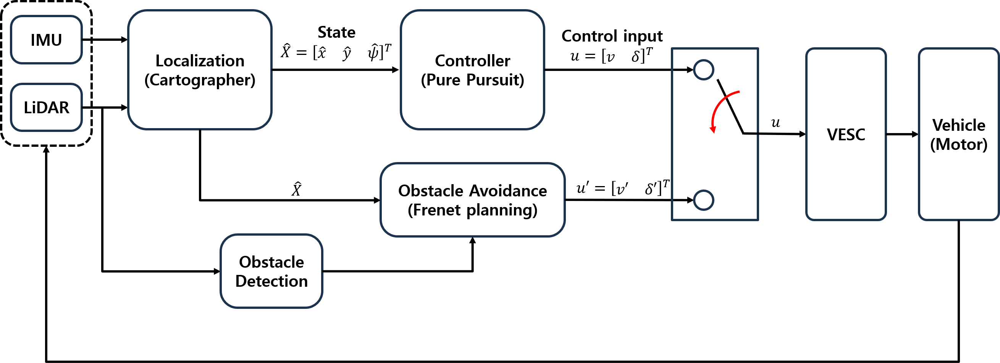
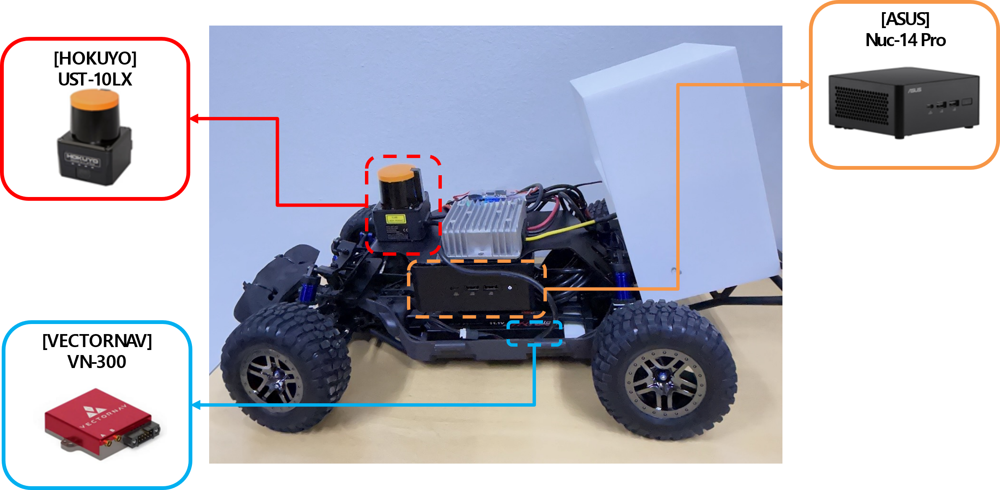
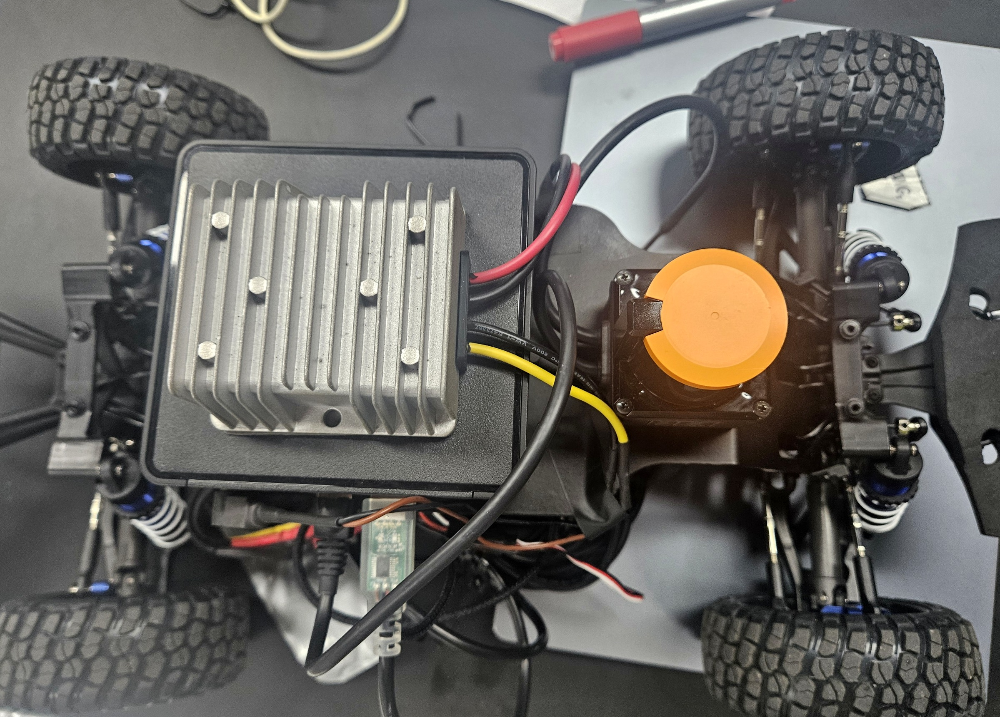
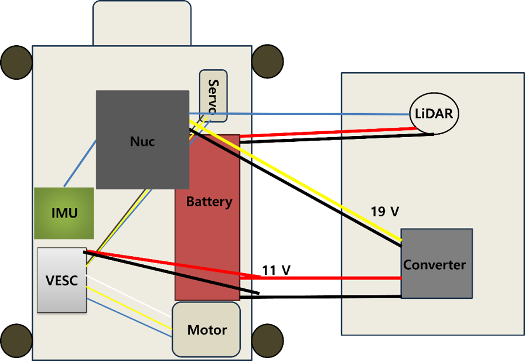
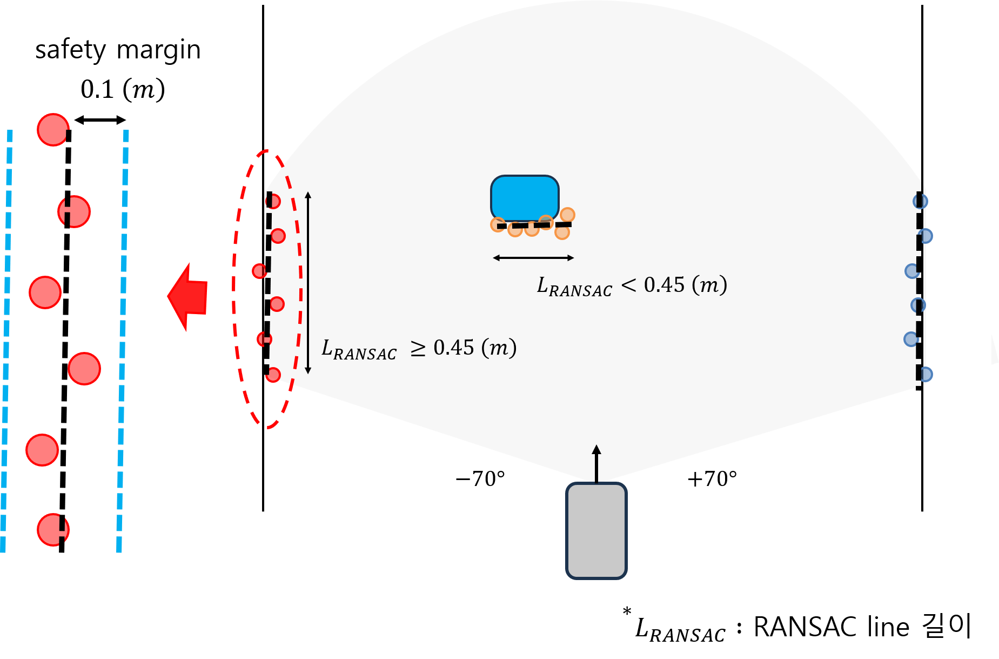
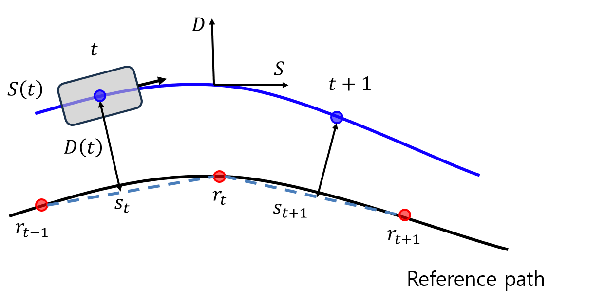
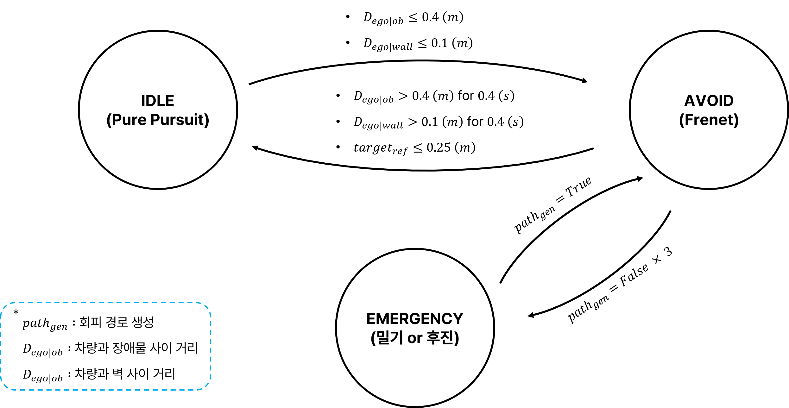
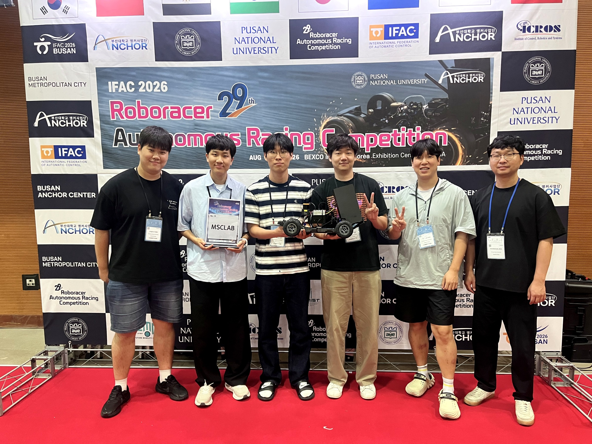

주행 판단에 필요한 라이다 영역만 추출
29TH ROBORACER AUTONOMOUS RACING COMPETITION
IFAC 2026 RoboRacer 장애물 인지 및 회피 경로 계획
Hokuyo 2D 라이다 점군에서 트랙 벽과 장애물을 구분하고, 최대 30개의 Frenet 후보 중 충돌하지 않으면서 기준 경로로 복귀할 수 있는 경로를 선택해 ROS 2 실차에 적용했습니다.
TOP 16국제 자율주행 경주
56개 팀 중 16강 진출
56개 팀 중 16강 진출
- 대회
- IFAC 2026, 부산 BEXCO
- 기간
- 2026.07–2026.08
- 담당
- 라이다 인지, Frenet 회피 경로 계획, FSM
- 팀
- MSCLAB 5인 팀

01 / SYSTEM
전체 시스템과 담당 범위
IMU와 라이다 기반 위치 추정, 장애물 인지, 회피 경로 계획과 Pure Pursuit 제어로 이어지는 전체 시스템에서 장애물 회피 영역을 담당했습니다. 라이다 Perception, Frenet 로컬 플래너와 FSM을 구현해 라이다 점군이 들어온 뒤 회피 경로가 선택될 때까지의 판단 흐름을 구성했습니다.
Perception과 Frenet Planner는 MATLAB에서 먼저 검증한 알고리즘을 Python으로 포팅해 ROS 2 실차 환경에 적용했으며, 실차 시험에서 발견한 문제를 해결하기 위한 추가 기능을 구현했습니다.

담당 1Perception
라이다 점군 군집화, RANSAC 선분 추출, 벽과 장애물 구분
담당 2Frenet Planner회피 후보 생성, 충돌 검사, 비용 비교와 최종 경로 선택
담당 3FSM기준 경로 추종, 회피와 복구 모드의 전환 판단
02 / VEHICLE
경기 차량 구성



Detection box는 상대 차량의 2D 라이다가 우리 차량을 안정적으로 검출하도록 탐지 단면을 확보하는 수직 구조물입니다.
03 / PERCEPTION
벽과 장애물 구분
라이다 전방 ±70° 점군을 DBSCAN으로 군집화하고 RANSAC으로 대표 선분을 추출했습니다. 선분 길이 0.45 m를 기준으로 트랙 벽과 장애물을 구분하고, 형상 불확실성이 큰 장애물에는 벽보다 넓은 안전 여유를 적용했습니다.

cKDTree 기반으로 인접 점을 물체 단위 군집으로 분리
점이 6개 이상인 군집에서 대표 선분 추정
LRANSAC ≥ 0.45 m는 벽, 미만은 장애물
법선 양측으로 벽 0.10 m, 장애물 0.24 m 확장
고정된 트랙 벽은 0.10 m, 형상과 위치 불확실성이 큰 장애물은 0.24 m로 설정해 불확실성이 큰 대상에 더 큰 여유를 부여했습니다.
끊긴 펜스 사이가 하나의 ‘유령 벽’으로 연결됐다
떨어진 펜스의 라이다 점이 하나의 RANSAC 선분으로 연결되면서 실제로 열린 통로까지 막힌 것으로 판단했습니다. 인라이어 간 간격이 0.35 m보다 큰 지점에서 선분을 분할하는 MaxInlierGap 조건을 추가했습니다.
MATLAB 원본에 없던 실차 개선 기능04 / PLANNING
Frenet 후보 선택

후보 경로 비용
mini 0.20 Jjerk,i + 10.0 Jsafety,i + 1.50 Joffset,i + 1.00 Jfinal,i + 0.05 Jtime,k
i = 1, 2, …, 15, k = 1, 2
- Jsafety
- 장애물과의 안전거리
- Joffset
- 기준 경로에서의 횡방향 이탈
- Jjerk
- 조향 변화의 부드러움
- Jfinal
- 회피 뒤 기준 경로 복귀
- Jtime
- 회피 경로에 도달하는 시간
횡 오프셋 0.0~±0.7 m, 0.1 m 간격 / 계획 지평선 1.5 s, 2.5 s
05 / FSM
주행 상태 판정

EMERGENCY의 밀기 및 후진 복구 로직은 구현했지만 실제 대회에서는 발동하지 않았습니다.
06 / TRACK TEST
실차 주행
07 / TROUBLESHOOTING
실차에서 생긴 문제
끊긴 펜스가 하나의 벽으로 연결
서로 떨어진 펜스가 하나의 RANSAC 선분으로 연결돼 실제 열린 통로까지 막힌 것으로 판단했습니다.
인라이어 간 간격이 큰 지점에서 선분을 분할하는 MaxInlierGap 추가벽까지 장애물처럼 크게 확장하자 통로가 사라졌다
벽과 장애물에 같은 안전 여유를 적용하면 좁은 트랙에서 실제로 통과 가능한 공간까지 막혔습니다.
벽 0.10 m, 장애물 0.24 m로 차등 적용계산상 유효한 경로가 실차에서는 부딪혔다
장애물 안전영역을 거의 스치도록 지나가는 후보는 계산상 유효했지만 실제 차량의 추종 오차 때문에 충돌했습니다.
최소 여유 0.05 m 이상인 후보가 있으면 그 후보군에서만 최저비용 경로 선택MinimumClearance 기반 2단계 선택차량이 정지한 채 경로 생성 실패를 반복
경로 생성 실패가 반복되면 같은 위치에서 같은 실패를 이어갔습니다.
연속 실패를 감지해 EMERGENCY 복구 로직 구현실제 대회에서는 해당 복구 모드가 발동하지 않음08 / RESULT
경기 결과와 실패 분석
16강
56개 팀 참가 국제 자율주행 경주
2026년 8월 24–27일, 부산 BEXCO

- 경기 결과56개 팀 중 16강 진출
- 결정적 실패16강 경기 중 충돌 이후 Cartographer의 pose 추정이 무너지며 기준 경로상의 차량 위치를 계산하지 못했고, 경로 추종을 지속하지 못했습니다.
- 대회 후 개선 시도16강 경기에서 충돌 이후 Cartographer의 pose 추정이 무너진 문제를 분석했습니다. 대회 후 연구실에서 Particle Filter로 초기 위치를 다시 추정한 뒤 Cartographer로 전환하는 복구 방식을 구현하고 시험했습니다.
- 배운 점위치 추정이 무너지면 제어와 회피가 함께 멈춘다는 것을 경험했습니다. 대회 후 연구실에서 위치 추정 전환 방식을 구현하고 시험하면서, 정상 주행의 정확도뿐 아니라 실패 이후 위치를 다시 잡고 추종을 재개할 수 있는 구조도 중요한 설계 기준임을 배웠습니다.
대회 후 개선 시도Particle Filter 기반 초기 위치 추정 → Cartographer 재전환
대회 후 연구실에서, 위치 추정이 무너졌을 때 Particle Filter로 차량 위치를 다시 확보한 뒤 Cartographer로 전환해 경로 추종을 재개하는 구조를 시험했습니다.